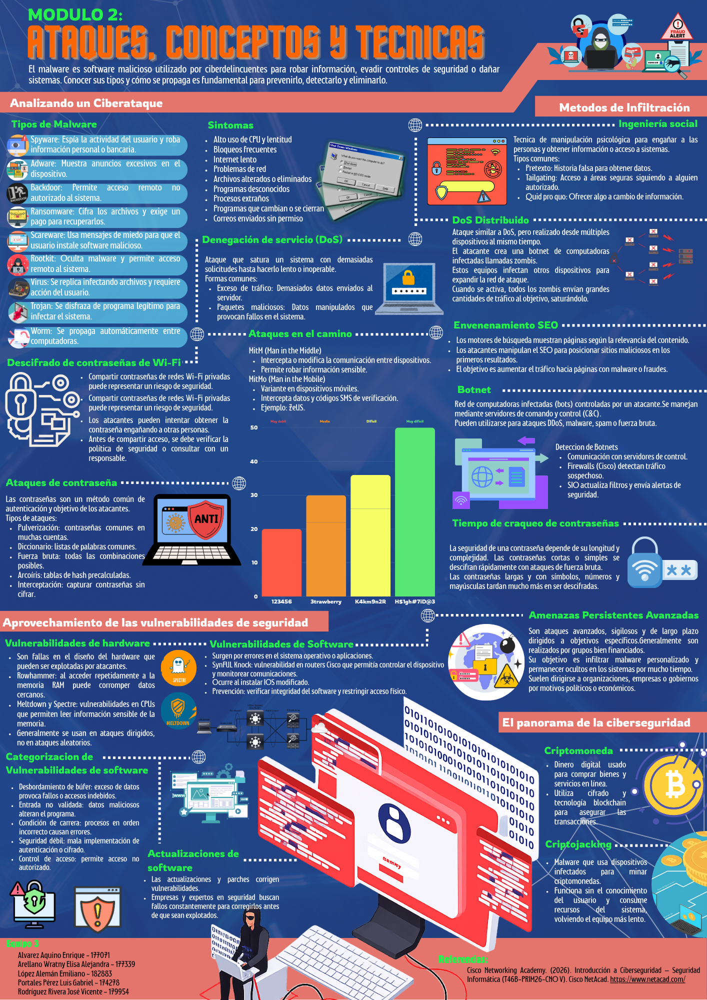

Introducción
Esta actividad presenta una síntesis visual de conceptos fundamentales relacionados con ataques y técnicas en ciberseguridad. Su propósito es organizar de manera clara los principales vectores de amenaza, las formas de infiltración más comunes y las vulnerabilidades que pueden ser explotadas en software, hardware y redes.
La infografía permite integrar contenidos de seguridad ofensiva y defensiva en una sola vista: tipos de malware, ingeniería social, ataques de denegación de servicio, botnets, ataques de contraseña, ataques en el camino, vulnerabilidades de hardware, amenazas persistentes avanzadas y criptojacking.
1) Panorama general
Idea central
La ciberseguridad no se limita a bloquear malware o instalar antivirus. También implica comprender cómo piensan los atacantes, qué técnicas utilizan para infiltrar sistemas, cómo comprometen credenciales y de qué manera aprovechan debilidades de personas, aplicaciones, protocolos y dispositivos físicos.
Malware
La infografía resume múltiples tipos de software malicioso, entre ellos spyware, ransomware, scareware, rootkits, virus, troyanos, gusanos, backdoors y adware. Todos ellos comparten el objetivo de dañar, espiar, cifrar, robar información o mantener acceso indebido al sistema.
Ingeniería social
Se presenta como una técnica de manipulación psicológica para engañar a las personas y obtener información o acceso. Entre sus variantes aparecen el pretexto, el tailgating y el quid pro quo.
Denegación de servicio
También se describen ataques DoS y DDoS, explicando cómo la saturación deliberada de solicitudes puede volver lento o inoperable a un sistema y cómo una botnet incrementa el impacto al distribuir el ataque entre múltiples equipos zombis.
2) Desarrollo temático
Tipos de malware
El contenido explica que el malware es software malicioso creado para robar información, evadir controles de seguridad o dañar sistemas. Se enfatiza que conocer los tipos y síntomas de infección es fundamental para prevenir y detectar incidentes.
Ingeniería social
Se destaca que muchos ataques no se basan solo en fallos técnicos, sino en manipular a la víctima. Esto hace evidente que la seguridad depende también de la concientización del usuario y de la verificación antes de compartir información sensible.
DoS / DDoS y botnets
La infografía explica que un ataque DoS busca saturar un sistema con demasiadas solicitudes, mientras que un DDoS lo hace desde múltiples dispositivos a la vez. Las botnets permiten coordinar esta clase de ataques mediante equipos infectados.
Ataques en el camino
Se describen variantes como Man in the Middle y Man in the Mobile, donde un atacante intercepta o modifica la comunicación entre dispositivos, pudiendo capturar información sensible o códigos de verificación.
Ataques de contraseña
Se presentan distintos enfoques: pulverización, diccionario, fuerza bruta, tablas arcoíris e interceptación. También se subraya que la longitud y complejidad de una contraseña cambian radicalmente el tiempo necesario para descifrarla.
Vulnerabilidades de software
Se mencionan fallas como desbordamientos de búfer, entradas no validadas, condiciones de carrera, debilidad en autenticación/cifrado y errores de control de acceso, demostrando que la calidad del desarrollo influye directamente en la seguridad.
Vulnerabilidades de hardware
La actividad también introduce debilidades a nivel físico y arquitectónico, como Rowhammer, Meltdown y Spectre, resaltando que algunos ataques no dependen del software sino del diseño de componentes críticos.
APT y SynFUL Knock
Se explican las amenazas persistentes avanzadas como ataques sigilosos y de largo plazo, orientados a objetivos específicos. Como ejemplo se menciona SynFUL Knock, asociado a routers Cisco con firmware alterado.
Criptojacking
Finalmente se presenta el criptojacking como malware que utiliza equipos infectados para minar criptomonedas sin autorización, consumiendo recursos del sistema y degradando el rendimiento general del dispositivo.
3) Reflexión técnica
Una de las principales fortalezas de esta actividad es que resume, en un solo recurso, amenazas de distinta naturaleza: técnicas, humanas, distribuidas y persistentes. Esto ayuda a comprender que la seguridad informática no debe abordarse de forma aislada, sino como una disciplina donde convergen usuarios, aplicaciones, redes, hardware y procesos.
También resalta que muchas vulnerabilidades pueden mitigarse con medidas relativamente claras: actualizaciones, validación de entradas, contraseñas robustas, configuración adecuada de controles de acceso, buenas políticas organizacionales y concientización permanente del usuario.
4) Material multimedia

assets/10.1.png.
5) Conclusión
Esta actividad permite reforzar una visión amplia de la ciberseguridad. No se trata solo de memorizar términos, sino de entender cómo distintas técnicas de ataque se relacionan entre sí y cómo cada una aprovecha debilidades humanas o tecnológicas.
La infografía funciona como un recurso de consulta rápida y también como evidencia de síntesis técnica, ya que organiza contenidos relevantes de manera clara, visual y útil para futuras actividades del curso.
6) Referencias técnicas
- Cisco Networking Academy. (2026). Introducción a Ciberseguridad – Seguridad Informática (T46B-PRIM26-CNO V). Cisco NetAcad.